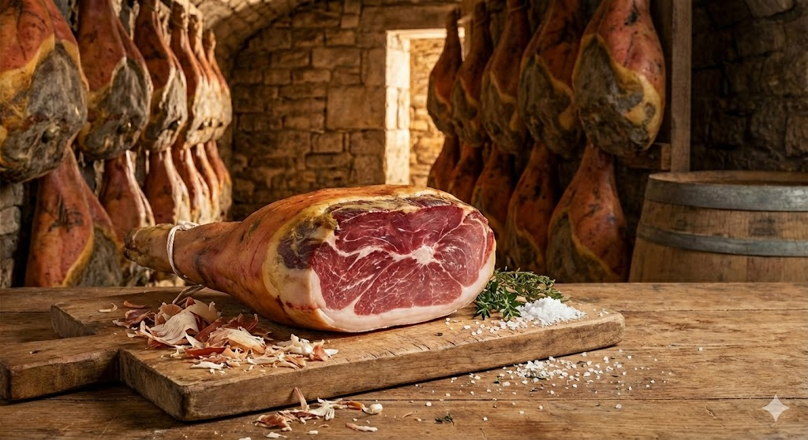
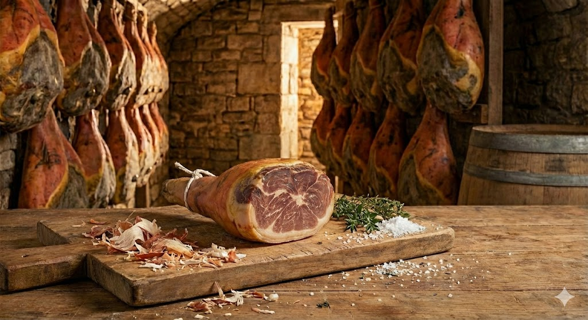
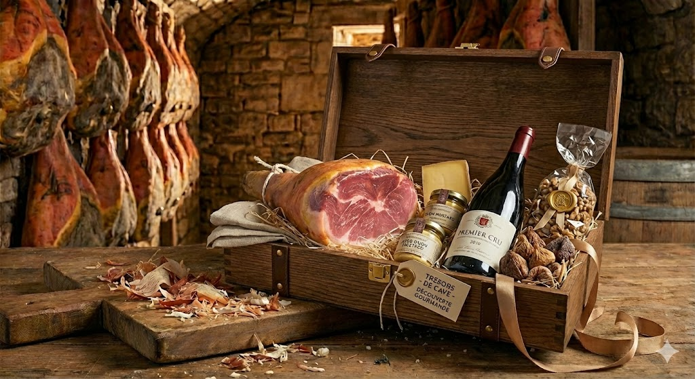

Maison fondée en Champagne
Artisan Charcutier
Jambon Cru d'Exception
— Châlons-en-Champagne —
L'excellence d'une tradition séculaire
Depuis des générations, la famille Felix perpétue l'art ancestral de l'affinage du jambon cru dans le respect des traditions champenoises.
Nous sélectionnons avec la plus grande rigueur nos porcs auprès d'éleveurs locaux partageant nos valeurs. Seules les pièces d'exception sont retenues pour devenir des jambons Christian Felix.
Le salage au sel sec de Guérande, effectué à la main selon les méthodes traditionnelles, confère à nos jambons leur caractère unique et leur saveur incomparable.
Nos jambons reposent patiemment dans nos caves naturelles pendant 18 à 24 mois. Le temps fait son œuvre, développant ces arômes subtils qui font notre renommée.

« Le temps est notre meilleur allié »
«Un jambon cru de qualité, c'est avant tout une histoire de patience, de passion et de respect du produit.
»
Des pièces d'exception pour les palais exigeants

Affinage 18 mois
Notre jambon classique, aux saveurs délicates et à la texture fondante. Idéal pour découvrir notre savoir-faire.
À partir de 89€ le kg
Affinage 24 mois
Notre fleuron, affiné deux années complètes. Des arômes complexes de noisette et une longueur en bouche exceptionnelle.
À partir de 129€ le kg

Assortiment Prestige
Jambon cru tranché, sélection de cochonnailles artisanales et bouteille de vin de Champagne. Le cadeau d'exception.
Coffret complet : 189€
Au cœur de la Champagne, dans la belle ville de Châlons-en-Champagne, la Maison Christian Felix perpétue depuis des décennies un savoir-faire artisanal d'exception.
Christian Felix a hérité de son père et de son grand-père les secrets d'un affinage parfait, transmis de génération en génération. Chaque jambon qui sort de nos caves porte en lui cette histoire familiale, cette passion pour le travail bien fait.
Aujourd'hui, la Maison Felix est reconnue par les plus grands gastronomes et chefs étoilés pour l'excellence de ses jambons crus, véritables joyaux du patrimoine charcutier français.
Découvrez notre atelier et dégustez nos produits
Maison Christian Felix
12, Rue des Artisans
51000 Châlons-en-Champagne
France
Du Mardi au Samedi
9h00 - 12h30
14h30 - 19h00
Tél : 03 26 XX XX XX
contact@christian-felix.fr